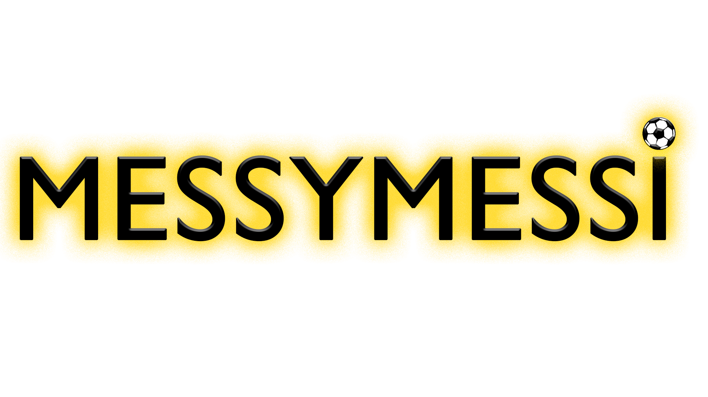

Messy Messi is an two player online game where players can compete to see who will be the best virtual athlete of all time! Messi Messy comes with a roaring crowd, fireworks when you score, and some awsome dance moves. Messy Messi won the audience choice award at the March 2023 Spartasoft game jam along with the second place holder for best mechanic!
Messy Messi was very challenging on the programming side due to network being put in place. I was the producer/audio for the team and over looked everything to make sure it went smoothly. Game jams usually constrict the scope of a game, so having networking in the final build was very stressful as over 40 builds of the game were made during the 48 hours. For the audio I created many samples of synthasized sounds and real chants from everyone at the game jam. Because of the environment, the sounds were somewhat tricky to isolate. But in the end, having everyone from the game jam cheer was worth to put in the game. (Click on the image to play the game on Itch.io!) 